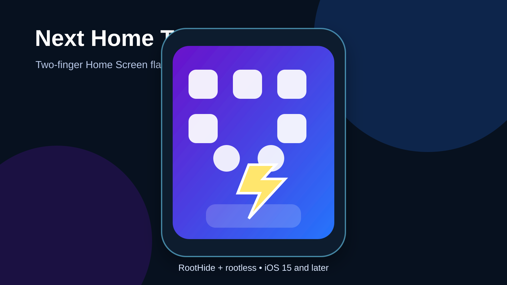

Next Home Torch
Toggle the flashlight with one simultaneous two-finger tap on an empty Home Screen area—without opening Control Center.

What the tweak does
Next Home Torch adds one focused convenience feature: touch empty Home Screen wallpaper with two fingers at the same time and lift them once to toggle the flashlight. A normal one-finger tap, double-tap, three-finger touch or unfinished gesture is ignored.
Compatibility
- iOS 15 and later, with primary testing target iOS 16.0
- RootHide build:
iphoneos-arm64e - Standard rootless build:
iphoneos-arm64 - Package ID:
com.nextsolution.nexthometorch
Testing status: Both packages compiled and passed deterministic and package-layout validation. Physical-device confirmation is still required before this page is published live.
Install from the Next Solution repo
- Add https://nextsolution.cc/ to Sileo.
- Refresh sources and search for Next Home Torch.
- Install the build matching RootHide or standard rootless.
- Respring when prompted.
How to use it
- Open the Home Screen.
- Find empty wallpaper space where no icon or widget is placed.
- Place two fingers down together and lift them once.
- Repeat the same gesture to turn the flashlight off.
Settings
Open Settings → Next Home Torch. The preference page contains only one clean option: Enable Next Home Torch. Turning it off disables the gesture without uninstalling the package.
Troubleshooting
- Confirm both fingers land on empty Home Screen space.
- Make sure the tweak is enabled in Settings, then respring once.
- Install the package that matches RootHide or standard rootless.
- Home Screen layout tweaks that consume multi-touch may conflict with the gesture.
Uninstall
Remove Next Home Torch in Sileo and respring. It stores only the local enabled preference and does not collect or transmit personal information.